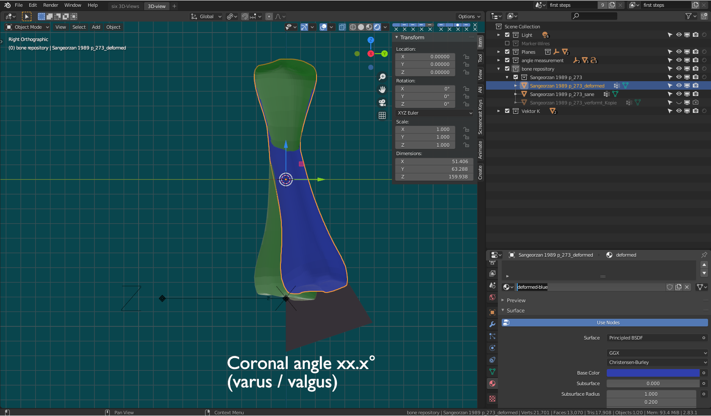
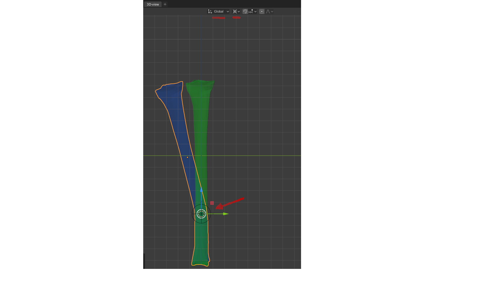
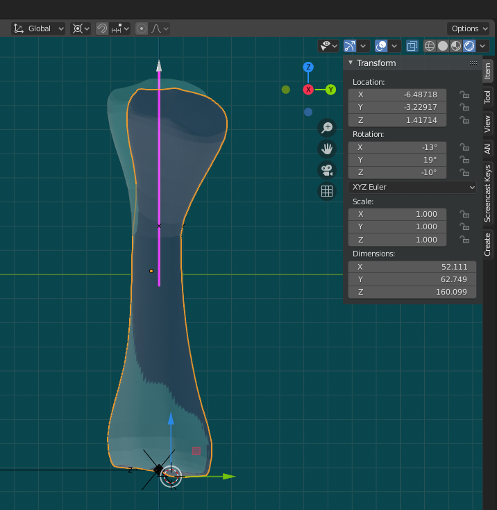
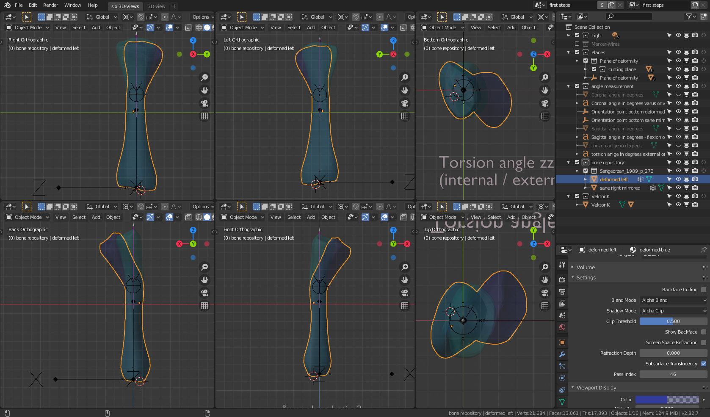
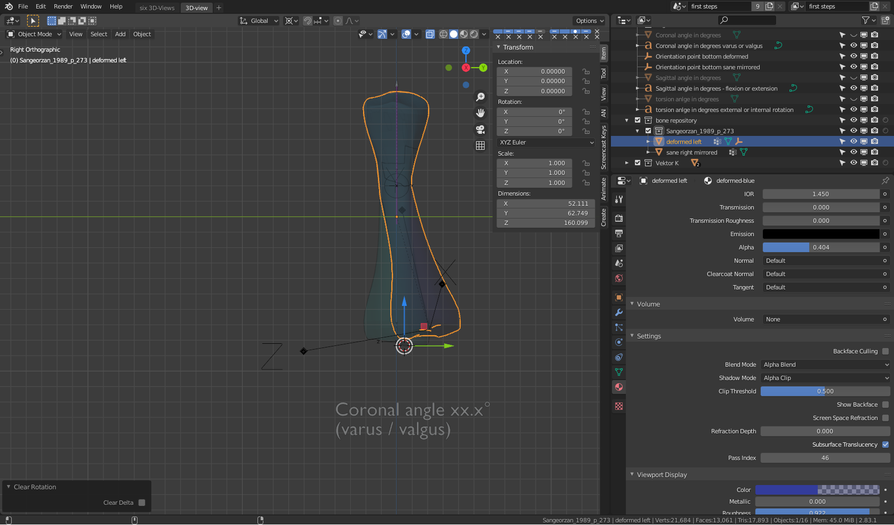
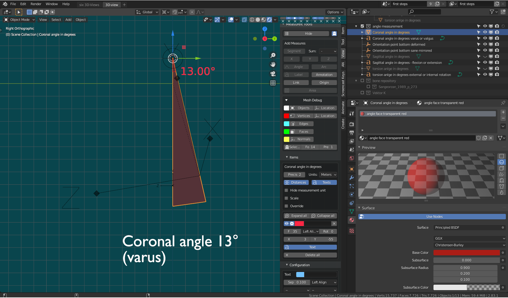
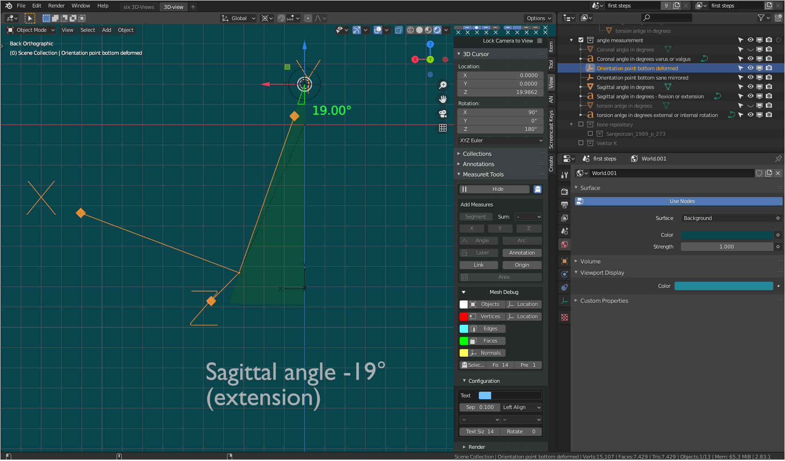
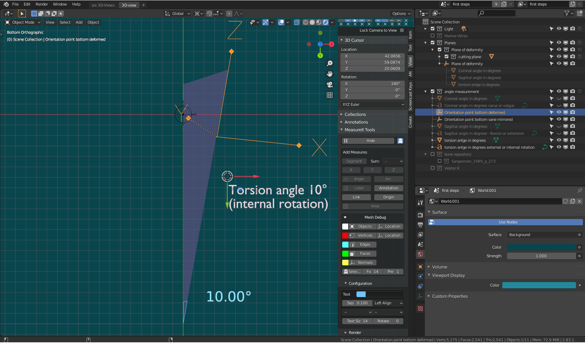
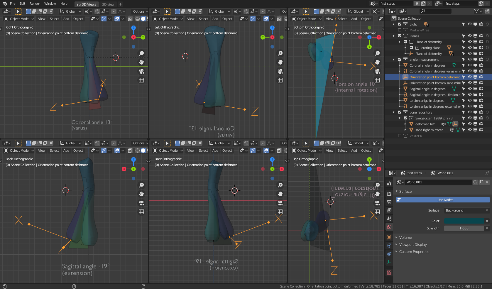

OP Planning with Blender
Install Blender
Follow the instructions on blender.org
First steps with blender
Find Help
OP-Planning steps
For a new case, the OP-Planning comprises the following steps:
- Insert sane and deformed bone in the measure and cut template
- Measure deformed bone angles
- Calculation of the cutting plane
- Virtual cut
- Virtual rotation
- Planning of the placement of K-Wires
- Planning of a cutting guide
Insert sane and deformed bone in the measure and cut template
Load and open the measure and cut template from:
Measure_and_Cut_Template_a00.blend

In the outliner:
- Select the
bone repositoryCollection
In the main menue select
File -> Append...Choose a library.blend file with the bones- Choose the collection where the bones are stored
- append the collection
You will find the new bone collection in the bone repository collection.
Measure deformed bone angles
Load and open the measure angles example file:
In the Outliner
Only the Light and bone repository collections are activated

Match the distal end of the deformed bone with the distal end of the sane bone
The proximal parts of the bones match in the example. The coronal plane already matches the Blender Right Orthographic view. The plane of deformity empty has to be moved upwards 19.9862 units along the Z-Axis into the center of deformity:
During OP Planning you can match the proximal parts with the same commands as described in Match the distal ends of the bones
Apply bone transformations
Be sure to apply the transformation for the sane and deformed bones repectively with Strg+A -> Apply all transforms after choosing each bone with 'RMB'. The Rotation, Location values are set to 0 and the Scale Values are set to 0. With 'Alt+G' (Translation), 'Alt+R' (Rotation) you can always restore the stored '0' position. This reset will be necessary for the angle measurement.
Transformation orientation and Pivot Point setting
- Use the Transformation orientation and Pivot Point settings to easily match the bones. For rotation transforms it might be good to place the cursor in the origin of the center of deformity and use
GlobalTransformation orientation and3D Cursoras Pivot Point.

Match the distal ends of the bones
- Select the deformed bone
- Use the Shortcuts
G+X,Y,Zto translate andR+X,Y,Zto rotate the bone. - Change between the views with the Numeric Keys of the Numpad: (If you don't have a numpad you can emulate one in
Edit -> Preferences -> Input -> Emulate Numpad)
1: Sagittal front
Strg+1 Sagittal back
3: Coronal front
Strg+3 Coronal back
7: Transverse Top
Strg+7: Transverse Bottom
You can also enter the Values in the Item Menue. Enter the Transform Location: X, Y, Z and Rotation X, Y, Z of the screencopy:


Or download the file:
Parent the Orientation Point Empties
In the Outliner:
- Activate the angle measurement Collection
- Select the empty "Orientation point bottom deformed"
With the Cursor in the 3D View:
G+ZMove the empty along the Z axis until the origin touches the distal bone surface- Be sure, that the local coordinates of
Orientation point bottom deformedandOrientation point bottom sane mirroredmatch with the directions of the global coordinate system. - Select
Orientation point bottom sane mirroredwithRMBand thenOrientation point bottom deformedwithShift+RMB. WithStrg+C -> copy locationandStrg+C -> copy rotationyou can set the location ofOrientation point bottom sane mirroredto the position ofOrientation point bottom deformed - Select
Orientation point bottom deformedand withShift+RMBadddeformed leftto the selection
Parent the empty with the deformed bone
Strg+P-> Object (Keep Transform)
Match the proximal part of the bones with Clear Location and Rotation
In the outliner:
- With
LMBselectdeformed left. - Important: The empty "Orientation point bottom deformed" is now deselected.
With the Cursor in the 3D View:
* Type Alt+G and Alt+R to reset the Transformation to match the proximal part of the bones.
The empty Orientation point bottom deformed moves with the distal part of the deformed bone and can be used for the exact angle measurement.
Define the position of the Plane of deformity
The horizontal position of the plane of deformity (Global Z Coordinate) could be determined visually at the pont of maximum bend of the deformed bone.
In the outliner
* Select Plane of deformity mesh
* Enter 19.9862 in Item -> Location -> Z

this situation can be downloaded from:
Measure the input angles
The Blender MeasureIt Add-on must be activated for the next steps.
Measure the Coronal Angle C
Numpad+3- deactivate the
bonerepository collection - Select the Mesh
Coronal angle in degrees - Change in Edit Mode with
Tab - Select the lower right vertice of the measurement triangle with
RMB. G+MouseMove the vertice so that the connection line between the vertice and the upper edge of the triangle crosses the origin of theOrientation point bottom deformedempty. By scrolling the Middle Mouse Wheel you can enlarge the empty to get an exact match.- with
Shift+RMBadditionally select the upper triangle vertice and the left triangle vertice. - In the view menu open MeasureIt Tools Panel and choose the
Anglebutton. - In the
MeasureIt ToolsPanel choose theShowbutton.
The angle of the triangle is shown in the 3D-View. It should be about 13° and is used as input value for the calculation of the Osteotomy angles. You might want to edit the color, size and position of the measurement inItem -> MeasureIt Tools -> Items -> Advanced Options. To see this option, the triangle mesh has to be selected. - Choose the text
Coronal angle in degrees varus or valguswith theRMBin the 3D-view. Change intoEdit ModewithTab. Edit the text and leaveEdit ModewithTab.

Measure the Sagittal Angle S
Numpad+Strg+1- Hide the Mesh
Coronal angle in degreeswithh. - Select the Mesh
Sagittal angle in degrees - Change in Edit Mode with
Tab - Select the lower right vertice of the measurement triangle with
RMB. G+MouseMove the vertice so that the connection line between the vertice and the upper edge of the triangle crosses the origin of theOrientation point bottom deformedempty. By scrolling the Middle Mouse Wheel you can enlarge the empty to get an exact match.
(If the angle measurement does not already appear in the 3D-view:
- with
Shift+RMBadditionally select the upper triangle vertice and the left triangle vertice. - In the view menu open MeasureIt Tools Panel and choose the
Anglebutton. - In the
MeasureIt ToolsPanel choose theShowbutton. )
The angle of the triangle is shown in the 3D-View. It should be about 19° and is used as input value for the calculation of the Osteotomy angles.
* Choose the text Sagittal angle in degrees - flexion or extension with the RMB in the 3D-view. Change into Edit Mode with Tab. Edit the text and leave Edit Mode with Tab.

Measure the Torsion Angle T
Numpad+Strg+7- Hide the Mesh
Sagittal angle in degreeswithh. - Select the Mesh
torsion angle in degrees - In
Properties -> Object Constraints Propertiesdelete theCopy LocationConstraint by clicking the 'X' withLMB Strg+M+x + Returnmirror the triangle along the X-axis.G+ymove the triangle along the Y-axis until the origin of the triangle is placed in the extension of the z-axis of theOrientation point bottom deformed.- Change in Edit Mode with
Tab - Select the upper right vertice of the measurement triangle with
RMB. G+MouseMove the vertice so that the connection line between the vertice and the origin of the triangle is parallel to the Z-axis of theOrientation point bottom deformedempty. Repeat the translation and rotation steps, until the line between the vertice and the origin of the triangle and the Z-axis of theOrientation point bottom deformedempty match exactly.
By scrolling the Middle Mouse Wheel you can enlarge the empty to get an exact match.
(If the angle measurement does not already appear in the 3D-view:
- with
Shift+RMBadditionally select the upper triangle vertice and the left triangle vertice. - In the view menu open
MeasureIt ToolsPanel and choose theAnglebutton. - In the
MeasureIt ToolsPanel choose theShowbutton. )
The angle of the triangle is shown in the 3D-View. It should be about 10° and is used as input value for the calculation of the Osteotomy angles.
* Choose the text torsion anlge in degrees external or internal rotation with the RMB in the 3D-view. Change into Edit Mode with Tab. Edit the text and leave Edit Mode with Tab.


All necessary input angles for the calculation are now now determined.
{#References
ref 1
Sangeorzan BJ, Sangeorzan BP, Hansen ST, et al: Mathematically Directed Single-Cut Osteotomy for Correction of Tibial Malunion. J Orthop Trauma 3:267-275, 1989.
ref 2
Sangeorzan BJ, Judd RP, Sangeorzan BJ: Mathematical Analysis of Single-cut Osteotomy of Complex Long Bone Deformity. J Biomech 22:1271-1278, 1989.
ref 3
ref 4
Dobbe JG, Pre KJ, Kloen P, et al: Computer-assisted and patient-specific 3-D planning and evaluation of a single-cut rotational Osteotomy for complex long-bone deformities. Med Biol Eng Comput 49:1363-1370, 2011.
ref 5
J. G. G. Dobbe, K. J. du Pre´, L. Blankevoort, G. J. Streekstra, P. Kloen: Computer-assisted oblique single-cut rotation osteotomy to reduce a multidirectional tibia deformity: case report Strat Traum Limb Recon (2017) 12:115-120
#}